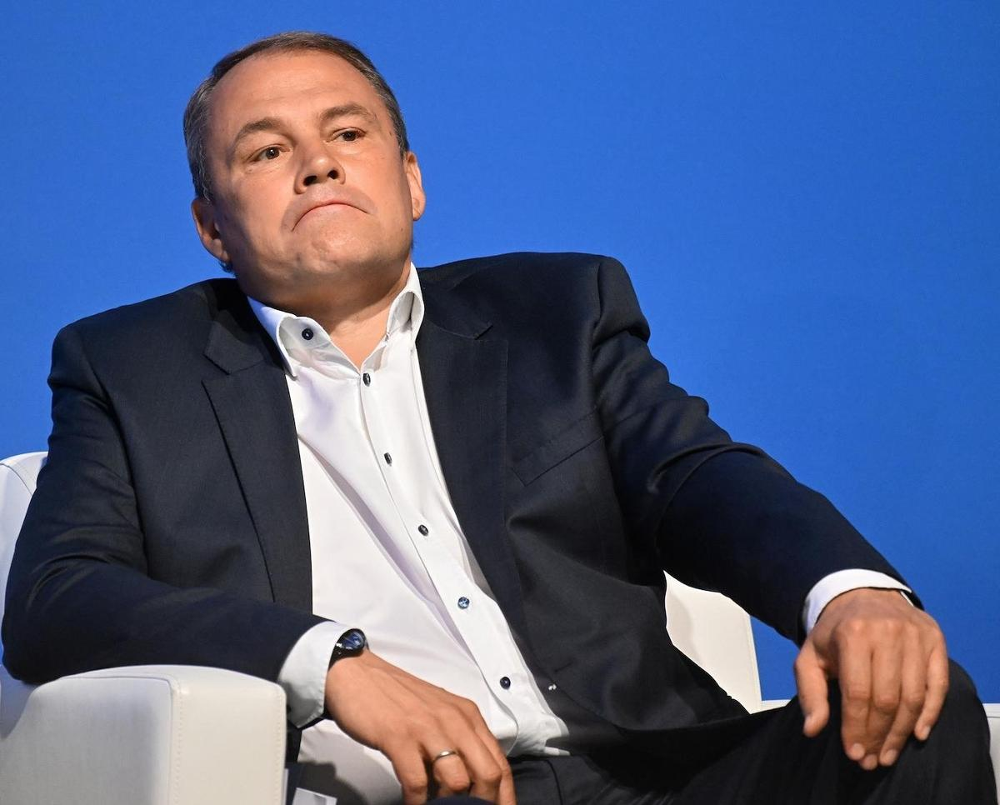

Праправнук классика.
Апологет государственного насилия.

Пётр Толстой — праправнук Льва Николаевича Толстого, вице-спикер Государственной думы и бывший заместитель генерального директора Первого канала. Сочетает аристократическое происхождение с государственной пропагандой. В 2017 году скандально прославился в ПАСЕ фразой о «внуках Сороса», ставшей символом системного антисемитизма в российской политике.
Родился 20 августа 1969 года в Москве. Праправнук Льва Николаевича Толстого по линии сына Андрея. Фамилия Толстой в советское время была одновременно обузой и ресурсом: культурный капитал при идеологических ограничениях. Получил журналистское образование.
Начал карьеру в журналистике в постсоветский период. Пришёл на Первый канал, где постепенно сделал карьеру от ведущего до заместителя генерального директора. Вёл ряд политических программ и ток-шоу, постепенно смещаясь от журналистики к государственной идеологии.
Избран депутатом Государственной думы VII созыва от «Единой России». Стремительно вырос до поста вице-спикера — один из пяти заместителей Председателя Думы. Представлял Россию в Парламентской ассамблее Совета Европы (ПАСЕ), пока Россия не была исключена.
На заседании ПАСЕ в Страсбурге заявил, что организации, финансируемые Джорджем Соросом, оказывают влияние на европейскую политику через «внуков и правнуков тех, кто покинул Россию в 1917 году». Высказывание было расценено как антисемитское. Европейские коллеги потребовали извинений. Толстой отказался.
После вторжения в Украину Россия была исключена из Совета Европы. Толстой попал под санкции ЕС, США, Великобритании и Канады. Факт Латвия и Эстония объявили его персоной нон грата. Факт Продолжает занимать пост вице-спикера Думы и активно поддерживает войну с думской трибуны.
С думской трибуны Толстой активно продвигает нарратив об «исторически русских землях» — включая Харьков, Одессу и всю Новороссию. После президентских выборов в марте 2024 года, которые Запад отказался признавать легитимными, Толстой возглавил кампанию по «суверенной демократии»: утверждал, что российская модель выборов превосходит западную. В ответ на курский прорыв ВСУ (август 2024) призвал к «тотальному ответу» и ужесточению законодательства о военной цензуре.
К трёхлетию полномасштабного вторжения Толстой выступил с программной речью в Думе: назвал любые территориальные уступки «предательством павших» и «исторической катастрофой для России». На фоне переговорных сигналов от администрации Трампа занял жёсткую позицию — переговоры возможны только на условиях полной капитуляции Украины. Продолжает оставаться одним из самых цитируемых депутатов Думы в европейской прессе — как символ непримиримого российского национализма.
Толстой — один из немногих российских пропагандистов, чьи высказывания вызвали официальные протесты европейских парламентов. Интерпр.
«Все эти НКО финансируются Соросом, внуками и правнуками тех, кто в 1917 году бежал из России — и теперь они возвращаются, чтобы нас учить.»
«Русофобия стала официальной политикой Запада. Но Россия — не та страна, которую можно сломить санкциями.»
«Лев Толстой был патриотом России. Я — его наследник не только по крови, но и по духу.»
«Украина давно перестала быть независимым государством. Это проект Запада против России.»
Наследник величайшего русского гуманиста — апологет войны. Аристократ с европейскими корнями — персона нон грата в Европе. Журналист — вице-спикер законодательного органа.
Лев Толстой — автор «Войны и мира», пацифист, отлучённый от церкви за антимилитаризм. Пётр Толстой носит его фамилию и поддерживает войну. Дистанция между предком и потомком — не только во времени, но и в системе ценностей: ровно противоположные позиции по одному вопросу.
Представитель одной из самых известных дворянских фамилий России служит идеологии, которая исторически уничтожила его класс. Советская власть преследовала дворян. «Единая Россия» использует аристократическое имя как культурный ресурс для легитимизации государственной пропаганды.
До 2022 года представлял Россию в ПАСЕ — европейском парламентском органе. Активно работал в европейских институтах. Одновременно — системно разрушал доверие к ним изнутри. После исключения России стал персоной нон грата в странах, где ещё недавно заседал.
Активно поддерживает законодательство об «иностранных агентах» в России. При этом сам представлял интересы российского государства в международных европейских органах — то есть действовал как агент иностранного государства в европейской парламентской системе.
«Его высказывание о "внуках Сороса" — образцовый пример антисемитских коннотаций в современной российской политике.»
«Он работал в европейских структурах, понимал их механизмы — и использовал это знание для дискредитации изнутри.»
«Требуем, чтобы ПАСЕ осудила антисемитские высказывания Толстого. Его слова — это не оговорка, это система.»
«Объявление его персоной нон грата — минимально необходимая реакция на годы враждебной деятельности.»
«Пётр Толстой — пример того, как историческое имя превращается в инструмент легитимизации авторитаризма.»
Толстой работает на пересечении трёх площадок: Первый канал, Государственная дума и международные парламентские структуры. Каждая усиливает другую.
Все утверждения в данном досье основаны на открытых публичных источниках. Факты, отмеченные Факт, имеют прямые первичные источники. Отмеченные Интерпр. — авторская интерпретация задокументированных событий.